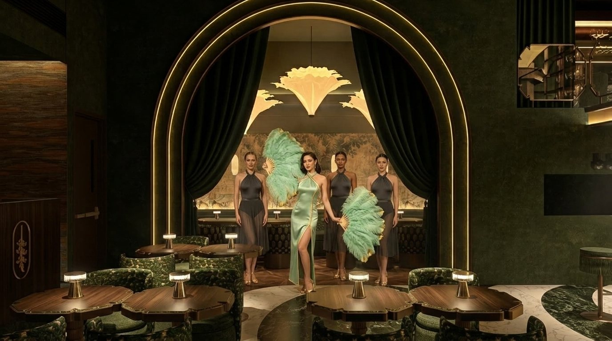
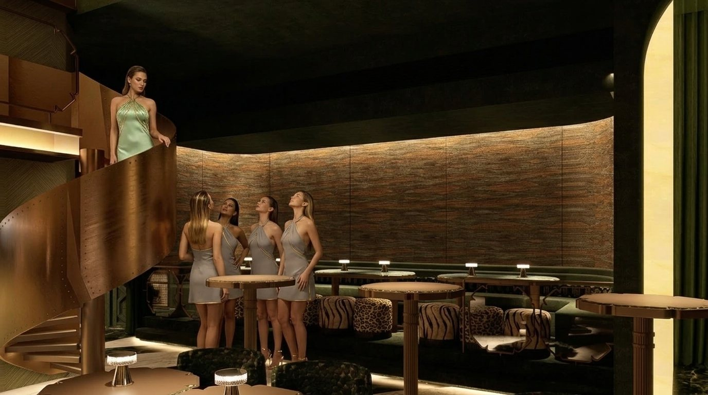

Bonifacio Global City · October 2026
Rare by design.
Jade gives the Philippines nights it has never had.
I · The curtain
Past the green velvet.
The corridor is the first course. At the end of it the wood oven is already lit and the caviar is already on ice.
II · The floor
Seventy-seven seats. One menu by Todd English.
Raw bar, wood and fire, pasta finished at the table. Two seatings a night, Tuesday to Sunday. The bar until 2AM.
See the menuIII · The raw bar
Oysters, kinilaw, caviar.
The tower comes first: oysters, prawns, kinilaw, blue crab and clams. Caviar service at the bar, the house pour beside it.
IV · The pour
The Jade Negroni. The house pour.
Emerald martini, Kyoto old fashioned, champagne by the glass, sake service. Caviar at the bar until 2AM.
The pourV · Wood and fire
Lapu-lapu from the oven. Short rib. Wagyu sando.
Food by Todd English, cooked over fire in front of the room. Filipino soul, a global table.
Reserve a tableVI · The stage, after dark
The night set arrives at ten. Soufflé at midnight.
The tiers fill and the lights drop. Dinner runs through the band to the last pour. Chocolate and barako to close.
Reserve a table
01 / 06
The story · The jade vine
Philippine soul.
Global table.
The Philippine jade vine blooms once a year, only in these islands. Its colour is one of the rarest in nature. It comes alive after dark, when bats arrive for its nectar and carry a little of the flower away. Because they came, it blooms again.
Jade works the same way. The vine inspires our cocktails, our dishes and every night we host. A room is only a room until the night set arrives.
The show
Immersive space
Six rooms. Each keeps its own hour.
Move across a room and the picture ripples like the onyx. Choose the room first. The kitchen follows you.
Food by Todd English
Three decades in. Still in the room.
Born in Amarillo, trained at the Culinary Institute of America, apprenticed in Italy. In 1989 he opened Olives, a fifty-seat storefront in Charlestown that grew into one of America's best-known restaurant brands. The James Beard Foundation named him National Rising Star Chef and Best Chef of the Northeast.
His kitchens have run from Las Vegas to the Bahamas to Abu Dhabi. At Jade, he brings the world to a Filipino table.
The show · Four acts a night
Four acts. Six women. One story a night.
The night set arrives at ten. One company, one gown in three colourways, four fixed times. The piece inside each act changes with the night; the clock does not. Service never stops for more than eight minutes.
10:00PM
The opener
The stage
One woman, two feather fans, three behind her. Slow, lit, the first slit of the night.
11:00PM
The line
The stage
Four in one line, mirrored; or one coming down the stair. Wednesday and the weekend: Cell Block, six chairs, six stories.
12:15AM
The walk
The floor
After the soufflé the women come between the tables. A hand on a shoulder. One table is served the house pour.
1:00AM
The late set
Floor and booth
The night tips into the DJ. The piece that keeps the room until two.

Jade FansAct I · The stage

The StaircaseAct II · Thursday
The PearlTuesday · SundayThe VineThursdayThe Night SetWednesday · Friday · SaturdayThe StoneWhen Cell Block restsRare by DesignOpening weekThe PearlTuesday · SundayThe VineThursdayThe Night SetWednesday · Friday · SaturdayThe StoneWhen Cell Block restsRare by DesignOpening week
The night set
After dark · By application
The hungry. The curious. The ones who stay for one more.
Forty founding members. Priority at both seatings, the late room after midnight, the cellar at cost, a host who knows your name. One tier. The door closes at forty.
Join the night set
Reserve
Tonight, or any night.
Up to twelve here. Larger evenings go through the house.